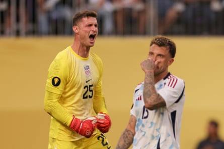

You can, as they say, only beat the teams in front of you. You can only play with the guys you’ve got. And you can only overcome the challenges you are confronted with.
When the United States men’s national team gathered to embark on the ongoing Concacaf Gold Cup in early June, success at the regional championship was tricky to define for the seven-time champions. They would, after all, be appearing absent 10 regulars and entering an event that hardly offered up the world’s strongest opposition.
Yet this deeply diluted and sometimes plain experimental US side has passed test after test.
In the group stage, the Americans played opponents that were well-organized; opponents that were spirited; opponents that were plain god-awful. And it beat them all – that is, respectively, Saudi Arabia, Haiti and Trinidad and Tobago.
On Sunday night in Minneapolis, the USMNT ticked several more boxes in beating Costa Rica in the quarter-finals to move on to a semi-final date with Guatemala in St Louis on Wednesday. Mauricio Pochettino’s side did so by overcoming their first deficit of the tournament, matching a feisty opponent in their zeal and energy and, in the end, surviving a penalty shootout 4-3 following a 2-2 tie.
Thus the Yanks only just avoided becoming the third favorite to be upset on penalties in this quarter-final round alone, after Panama lost to Honduras on Saturday and Canada were bounced by Guatemala earlier on Sunday.
In the 10th minute, the USA’s beleaguered left back Max Arfsten blocked a cross in his own box and then clumsily attempted to clear it, kicking through Kenneth Vargas who sought out the contact. Francisco Calvo snuck the penalty kick just past US goalkeeper Matt Freese to put Costa Rica ahead early.
But on a slow grass field laid over an artificial one at US Bank Stadium, sending players slipping and sliding, the US showed the kind of character that has so often been dispiritingly lacking for more than a year – in yet another half-empty Gold Cup venue.
After half an hour, Juan Pablo Vargas clipped Malik Tillman on the ankle after a cross in the box. Tillman, who has somehow been both the USA’s most influential and unluckiest player at this tournament, took his own penalty kick but rolled it off the left-hand post. It was his first attempted spot kick as a senior professional.
Diego Luna, however, scored his first national team goal before the break on a shot that took a big deflection. And minutes after the intermission, Arfsten, of all people, put the US ahead by finishing off a nicely worked attack teed up by Tillman and Patrick Agyemang’s heroic holdup play leading the American line once again.
Matthew Freese of the United States celebrates after making a save during Sunday’s penalty shootout against Costa Rica.Photograph: John Dorton/ISI Photos/USSF/Getty Images
Keylor Navas, Costa Rica’s wily veteran in goal, made a splendid save from Chris Richards’ header minutes later. And an Arfsten cross was deflected onto the Ticos’ crossbar. The US never did get any closer to a third goal.
It would come to regret this neglectfulness.
After a series of defensive breakdowns in the American box, Carlos Mora took a clear shot at Freese and Alonso Martínez was allowed to run free and sweep in the rebound to equalize in the 71st minute. Martínez nearly won it with a shot that pinged off the far post in the 85th minute.
On penalties, however, Tillman redeemed himself and Damion Downs scored the winner on the sixth round of kicks. Freese saved no fewer than three times, his tongue out in celebration and nodding to the crowd, plainly having a delightful evening. “Penalties are my thing,” he declared to Fox after the game. “On the plane ride over here to Minnesota I was studying the penalties. I’ve been studying them all week. I was ready for it if we needed it.”
Although an early elimination here would have triggered an inquisition and yet more existential questions over the state of the American program, safe passage to the next round suggests something greater and ultimately more useful than a 17th Gold Cup semi-final appearance.
A team that often seemed deflated, disinterested and generally gormless over the last year looked like something entirely different on Sunday. Feisty. Pressing ferociously. Quick to get in opponents’ faces. Luna made himself a favorite of Pochettino’s for blithely playing through a broken nose early on in the Argentine’s tenure. Now, that attitude appears to have spread. Sebastian Berhalter, the son of Pochettino’s predecessor and a surprise starter this tournament, may have missed a penalty kick and sometimes been untidy on the ball, but he seemed to be in the center of every melee as his family looked on, driving the team’s intensity.
This largely inexperienced American squad no longer has the look of an incongruous outfit that could be accused of not caring. And these players will be hardened by having lived through a tense game like this one.
“I think it’s good for this group of players to have this type of experience,” Pochettino said after the game. “It’s priceless, because that is the reality when you are in a big tournament, that things can happen, and it’s important that they start to build the experience together.”
The Americans faced three major setbacks – giving away an early penalty and goal; missing a penalty of their own; and a late equalizer – and bounced back from all of them, holding up under swelling pressure. “We showed great character,” said Pochettino. “Ok, we [give away] a penalty? We miss a penalty? The team kept going and believing in the way we play. In some moments, we played really, really well. We’re starting to play like a team and to show the quality.”
What the USMNT needed out of this Gold Cup above all was not silverware but to rebuild its culture and confidence. It may yet get all those things.
- Leander Schaerlaeckens is at work on a book about the United States men’s national soccer team, out in 2026. He teaches at Marist University.